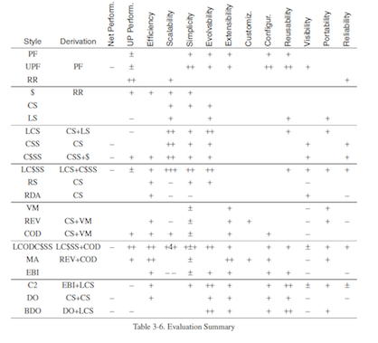
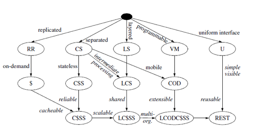

JavascriptMVC
Librería jQuery y servicios REST
Alberto Jimenez Ruiz
Agustin Jimenez Fernandez
Ignacio Baca Moreno-Torres
Febrero 2012
Alberto Jimenez Ruiz
Agustin Jimenez Fernandez
Ignacio Baca Moreno-Torres
Febrero 2012

El estilo más prometedor fue Layered-Code-on-Demand-Client-Cache-Stateless-Server (LCODC$SS)

RESTful: Implementación que cumple con el estilo REST.
La implementación más conocida y exitosa es RESTful HTTP.
Modela el concepto de Interfaz Uniforme usando el patrón Verbo + Sustantivo:
Historicamente lo comunicación remota entre componentes ha sido un problema para la programación distribuida. Distintas soluciones:
Los servicios REST surgen para realizar computación distribuída en la Web aprovechando la simpleza de REST.
La Web Moderna es Social: Los contenidos los crean y poseen usuarios no Administradores
Cientos de Aplicaciones se comunican entre ellas para compartir información del usuario
REST predomina en este ámbito. Características avanzadas
Servidor en REST (basado en GRAILS)
"/presentations"(controller: "presentationRest") {
action = [ GET: "findAll", POST: "create" ]
}
"/presentations/$id"(controller: "presentationRest") {
action = [ GET: "findOne", PUT: "update", DELETE: "destroy" ]
}
def findOne() {
log.info("Buscando uno: " + params)
Presentation p = Presentation.get(params.id)
render p as JSON
}
Cliente en REST (basado en JMVC)
function crearFuncion(){
var i=0;
var sumar = function() { i=i+1; return i; };
return sumar;
}
var fsumar = crearFuncion(); alert(fsumar()); alert(fsumar()); alert(fsumar());
$("body").on("click","p", function(){
$(this).after("Another paragraph!
");
});
$("button:first").click(function () {
update($("span:first"));
});
$("button:last").click(function () {
$("button:first").trigger('click');
update($("span:last"));
});
function update(j) {
var n = parseInt(j.text(), 10);
j.text(n + 1);
}
Posibilidad de lanzar eventos que están vinculados a otros elementos del DOM
$(document).ready(function(){
$(".verde").live("click", function(e){
var elem = $(this);
if (elem.html()!="Hiciste clic!!"){
elem.html("Hiciste clic!!");
}else{
elem.html("Hiciste de nuevo clic!!");
}})
$("#insertarelem").click(function(e){
var nuevoElemento = $('<div class="verde">Elemento creado dinamicamente</div>');
nuevoElemento.appendTo($(document.body));
});
$("#ponerclaseverde").click(function(e){
$("#noverde").addClass("verde");
});
})
jQuery.tabber = function( mensaje ){
$(mensaje).click(function(e){
var a = e.target.id;
//desactivamos seccion y activamos elemento de menu
$(".menu li.active").removeClass("active");
$(".menu #"+a).addClass("active");
//ocultamos divisiones, mostramos la seleccionada
$(".content").css("display", "none");
$("."+a).fadeIn();
});
}
JavaScriptMVC is an open-source framework containing the best ideas in jQuery development.
It guides you to successfully completed projects by promoting best practices, maintainability, and convention over configuration.
Divide et vinces
\tabs tabs.js - código para el widget tabs tabs.html - pagina demostración del widget funcunit.html - pagina para lanzar test tabs_test.js - código de los test tabs.css - css para el widget tabs
\cms
\models - models for the CMS
\views - views to configure the grid
cms.js
\jupiter
\tabs - a basic tabs widget
\edit - binds a form to edit a model instance
\grid - a configurable grid
\views
\steall
\jquery
\funcinit
\documentjs
\js - java script executable
StealJS se encarga de la gestión de dependencias, pero tambíen aporta la generación de código, minimizado JS/CSS, logging, etc.
// cargar dependencias
steal('jupiter/tabs',
'jupiter/grid',
'jupiter/create',
'./models/image',
'./models/video',
'./models/article'
'steal /less'
).then(
'./cms.less'
,function(){
Encapsulan las peticiones Ajax y la gestión de entidades
$.Model('Todo',{
findAll: 'GET /todos.json',
findOne: 'GET /todos/{id}.json',
create: 'POST /todos.json',
update: 'PUT /todos/{id}.json',
destroy: 'DELETE /todos/{id}.json'
},{});
Operaciónes CRUD en servidores RESTful out of the box
Los controladores ayudan a
$.Controller('Tabs',{
click: function() {...},
'.tab click' : function() {...},
'.delete click' : function() {...}
})
$('#tabs').tabs();
Las vistas se generán a través de plantillas
$("#foo").html('//path/to/template.ejs', data);
JavaScriptMVC soporta EmbeddedJS, JAML, Micro, jQuery.Tmpl...
<%for(var i = 0; i < this.length ; i++){%>
<li <%= this[i]%>>
<%== $.View('//slides/presentation/list/views/presentation.ejs',
this[i] )%>
</li>
<%}%>
Contructor del controlador del dialogo de configuración
init : function(){ this.element.html(this.view()); }
$('#todos').html("todos.ejs",Todo.findAll());
Representa la plantilla todos.ejs a partir de todos los todos obtenidos del servidor
S.open("//myapp/myapp.html");
S("#search").click().type("Hello World");
js myapp/scripts/docs.js
$("#panel").outerWidth(500);
$("#items").delegate(".item","draginit",function(){});
$.Class("MyNamespace.MyClass",{},{});
new MyNamespace.MyClass()